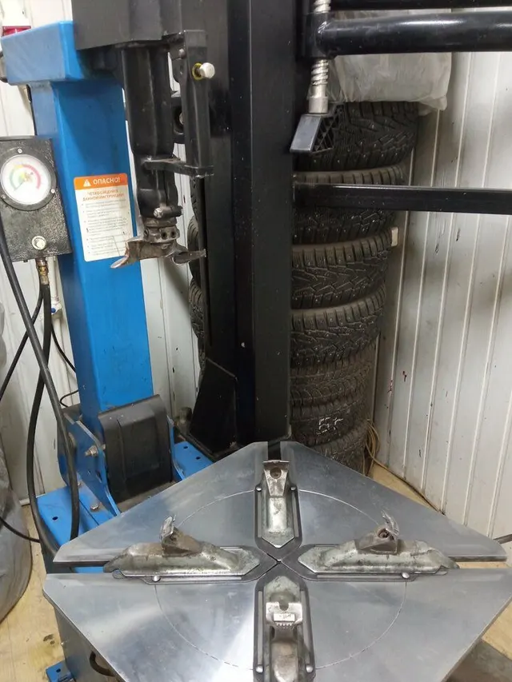
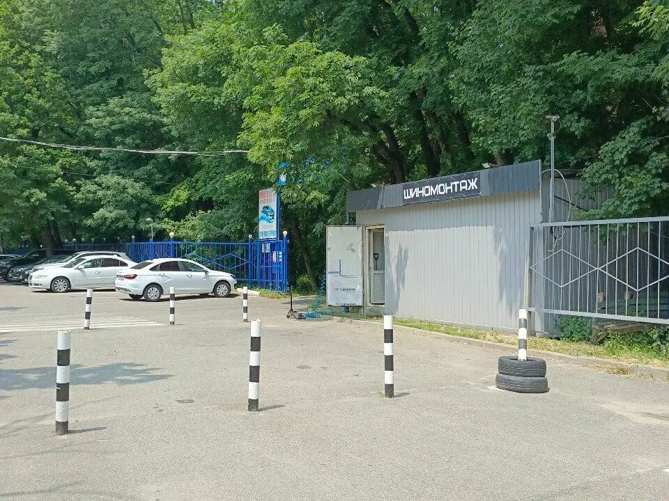
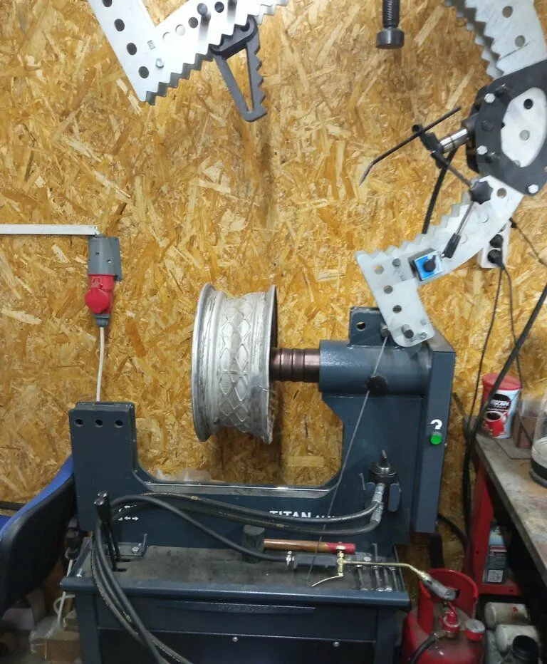
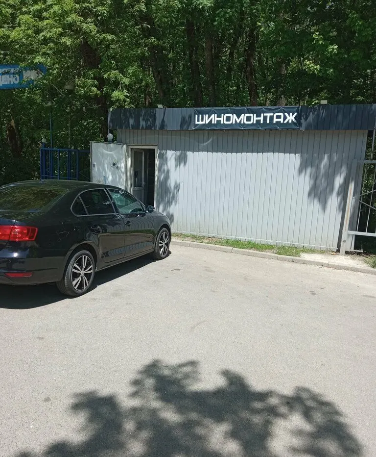
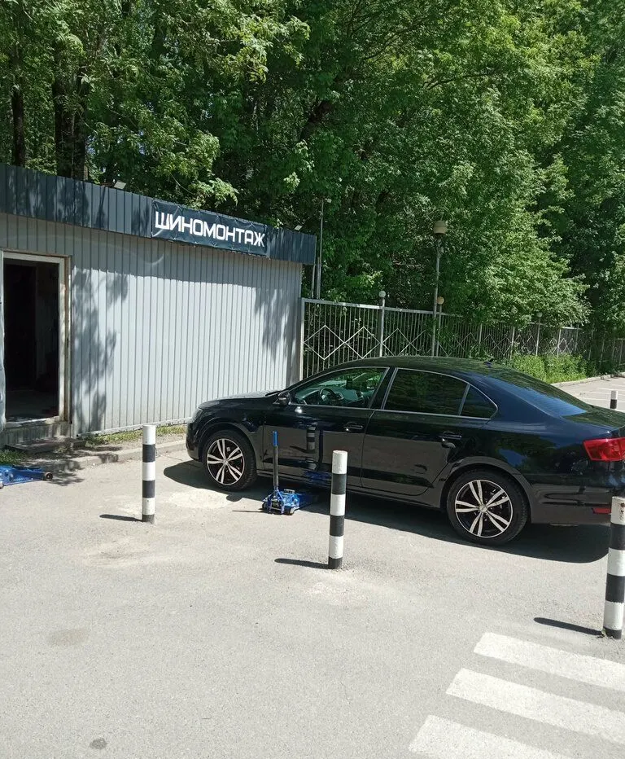

Шиномонтаж · правка дисков · сварка аргоном
Шиномонтаж на Шпаковской в Ставрополе
Выбираете услугу, день и время – запись уходит в WhatsApp. Переобуть все колёса – от 1 800 ₽ до 6 500 ₽. Ежедневно с 8:00 до 20:00.

- 4,4 на Яндекс Картах, 36 отзывов
- Ежедневно 08:00–20:00
- Переобуть все колёса – 1 800–6 500 ₽

Услуги и цены
Услуги и диапазон цены – с карточки на Яндекс Картах.
Шиномонтаж
- Переобуть все колёса1 800–6 500 ₽
- Балансировкауточнить
- Вулканизацияуточнить
Диски и утилизация
- Правка дисковуточнить
- Сварка аргономуточнить
- Прокатка дисковуточнить
- Утилизация шинуточнить
Цена зависит от размера колёс – точную назовут при записи.
Как записаться
- 01
Выбираете услугу, день и время
Ниже, в форме записи: сообщение уходит в WhatsApp с готовым текстом.
- 02
Или пишете и звоните сами
Контакты – в конце страницы, работаем с 08:00 до 20:00.
- 03
Приходите: Шпаковская улица, 111/70
Адрес и карта – в конце страницы.



Что вас ждёт
Нашли проблему и объяснили
Гость пишет в отзыве: всё показали наглядно и объяснили на понятном языке.
Выручают на месте
Клиентка отмечает: шиномонтаж прямо на парковке, помогли сразу.
Адекватные цены
В отзывах – про отличную цену и адекватные цены.
Отзывы с Яндекс.Карт
«Отличный сервис, уже не в первый раз к ним обращаюсь всё делают качественно и по отличной цене.»
Даниил Козлитин · 9 октября
«Отличная шиномонтажка, однозначно рекомендую, качественно и быстро выполнена работа, спасибо»
Виктория Колесникова · 10 октября
«Позвонил, договорились, приехал все успешно быстро качественно сделали»
Артем Драгунов · 13 ноября
Отзывы с карточки на Яндекс.Картах, без правок.
Частые вопросы
Сколько стоит переобуть все колёса?
От 1 800 ₽ до 6 500 ₽ – по карточке на Яндекс Картах, зависит от размера.
Правите диски?
Да: правка дисков, сварка аргоном и прокатка дисков указаны на карточке.
Где вы находитесь?
Ставрополь, Шпаковская улица, 111, корпус 70.
Запишитесь на удобное время
- Адрес
- Шпаковская улица, 111, корпус 70, Ставрополь
- Часы
- ежедневно 08:00–20:00
- Телефон
- +7 (962) 447-53-93